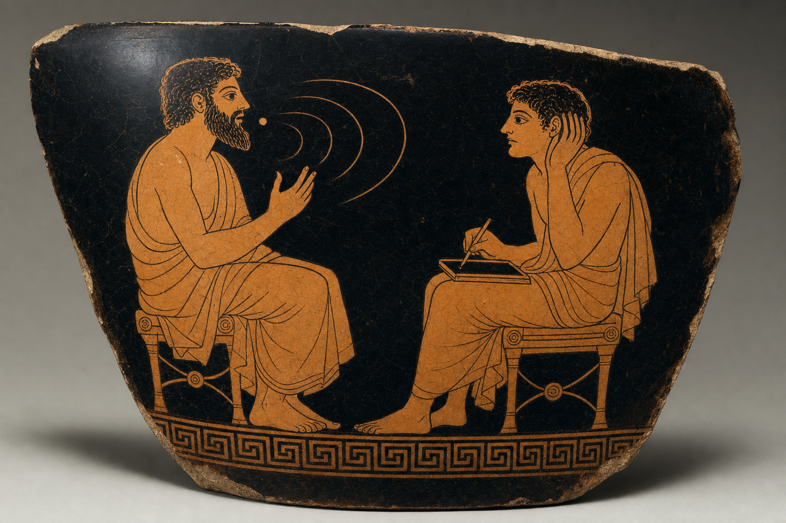
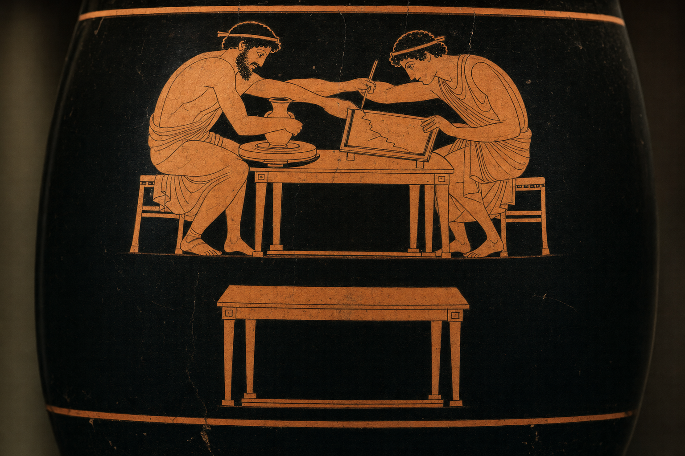
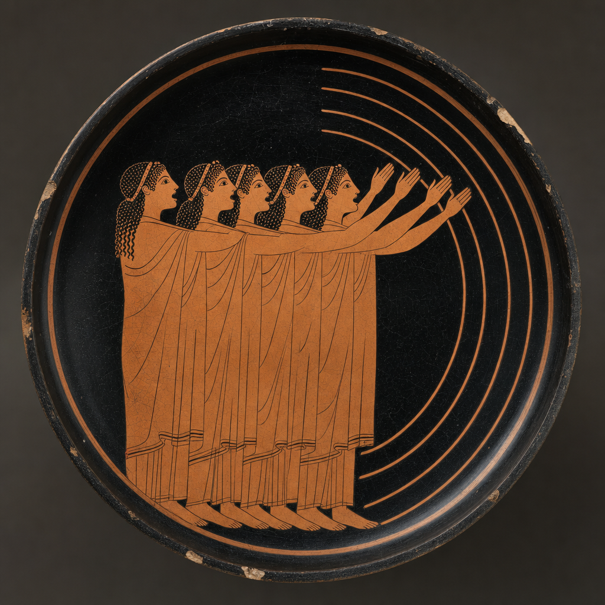
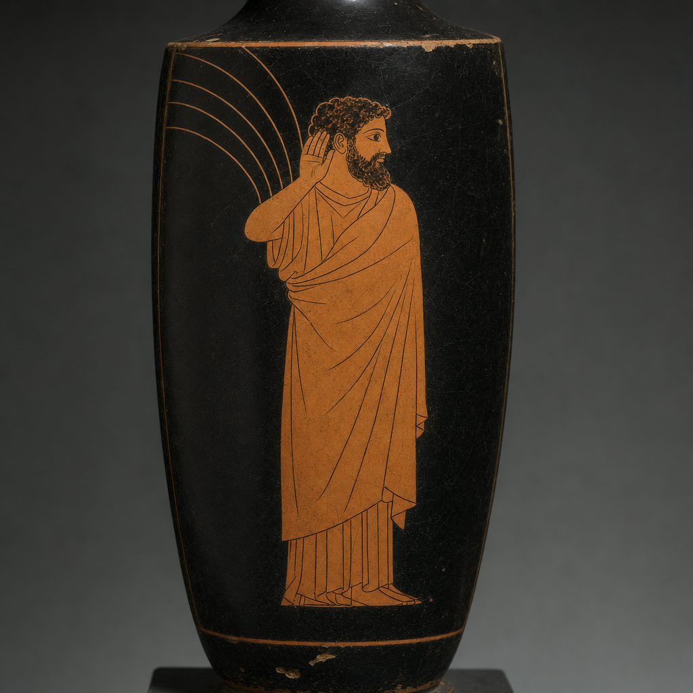
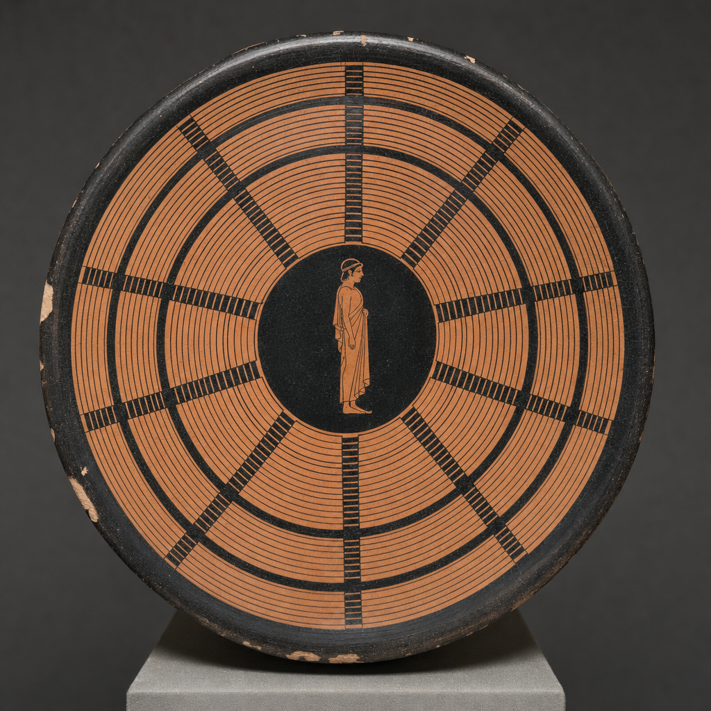
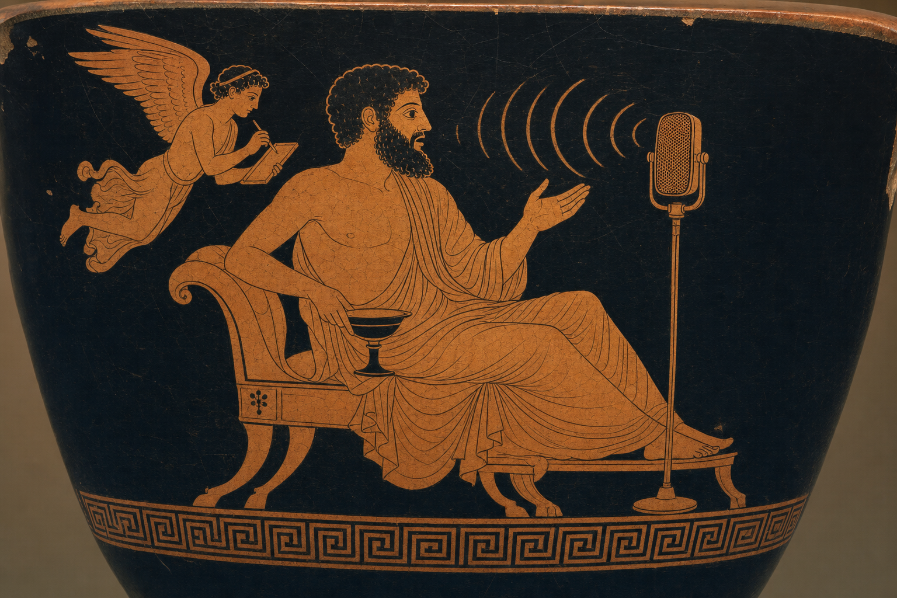

Sonocles listens to your Mac's microphone and streams what you say — word by word, about 180 milliseconds behind you.
Everything runs on the Neural Engine. Nothing leaves the machine.

Real frames. One word each, roughly every 200 ms.
Why it exists
The speech-follow built into the teleprompter was fighting the encoder for CPU. The prompter kept up. The audio did not.
OBS wants every core it can get. So does a software encoder. Adding speech recognition to that same contest meant dropped samples, and dropped samples on a take you cannot re-shoot are not a performance problem, they are a lost afternoon.
The Neural Engine, meanwhile, was sitting completely idle. It is a separate piece of silicon that no encoder is competing for. Moving the listening there did not make it faster so much as make it free — it stopped taking anything the recording needed.

The distinction
Dictation gives you a sentence once you have finished saying it. That is fine when you are writing and nothing downstream is waiting. It is useless when something is: a teleprompter that has to keep your pace, a cue that has to fire on a word, an editor that needs to know when you said it rather than when the transcript turned up.
| Dictation | Sonocles | |
|---|---|---|
| Gives you text | when you stop talking | while you are still talking |
| Aims at | a text field | a socket |
| Latency that matters | none, really | all of it |
| You are | writing | performing |
If dictation is what you actually want, use Sonari — it is very good, it runs Parakeet and WhisperKit locally, and it is made by a friend. We compared notes and concluded the use cases genuinely diverge: Sonari is built around the moment you stop speaking, and this one is built around the moment you have not.
What it is for
That is the honest answer — it exists because Pteroprompter needed it, and that is still the case it is tuned for. But nothing about it is prompter-shaped. It streams words and timestamps to a socket; what listens is your business.

The measurement
One instrument, one sentence, one microphone. Apple's own Speech framework delivers that sentence in four bursts, 3.7 seconds apart. We ship the comparison so you can re-run it rather than take our word for it.
| Engine | Arrival gap | Behind live | Words per arrival |
|---|---|---|---|
| Apple SpeechAnalyzer | 3747 ms | 0 ms, four times | 8.8 |
| Parakeet 320 ms | 302 ms | 540 ms | 2.3 |
| Parakeet 160 ms | 206 ms | 180 ms | 1.5 |
# the baseline is one flag away
make baseline
What it does
Every frame carries the audio time it describes, not just the time it arrived. Arrival time drifts with the delivery schedule; audio time does not. That is the difference between a marker you can cut on and one you have to nudge.
Thirty seconds of piano at -9 dBFS produced zero words. A transducer emits tokens as acoustic evidence arrives, so with no speech there is nothing to emit. Models that hallucinate over music are a real hazard when the output drives a scroll.
The models download once and run on the Neural Engine. The sockets bind to loopback only. There is no account, no key and no server — not as a policy, but because none was ever built.
The models run on the Neural Engine, which your encoder is not competing for. This is not a benchmark boast — it is the entire reason the thing was written. Recognition that costs you cores costs you takes.
SSE and WebSocket, both live at once. An HTTP control API to start and stop it, behind Basic auth if you want it. And a CLI that reports its own latency, because the claims here should be yours to check.
Using it
// both transports carry identical JSON, both live at once const es = new EventSource('http://127.0.0.1:7357/events') const ws = new WebSocket('ws://127.0.0.1:7358')
{ "type": "partial", "text": "the menu bar",
"audioStart": 40.28, "audioEnd": 40.8,
"lagMs": 200, "seq": 3 }
Use audioEnd, not ts. A missing lagMs means unmeasured — never zero.
The name
κλέος — kleos — the glory that exists because it is spoken aloud and heard.
The -cles in Sophocles and Pericles is the Greek -κλῆς, from kleos: renown. It descends from a root meaning to hear — the same one that gives English the word loud. In Homer, kleos is specifically the fame that survives because bards sing it and people hear it.
So the suffix does not merely mean famous. It means heard of. We would like to claim that was the plan.
Sono- is Latin: sonus, sound. -cles is Greek: kleos, heard-of. The name is a seam between two languages, which is not scholarship so much as an accident we have decided to be pleased about.
So is television. Nobody minds.

The mark
Seen from above, the tiers of a Greek theatre are concentric arcs struck from a single point on the orchestra floor — which is also, exactly, how you draw a voice leaving a mouth. The building is a diagram of what it is for. We took the coincidence.

One more
